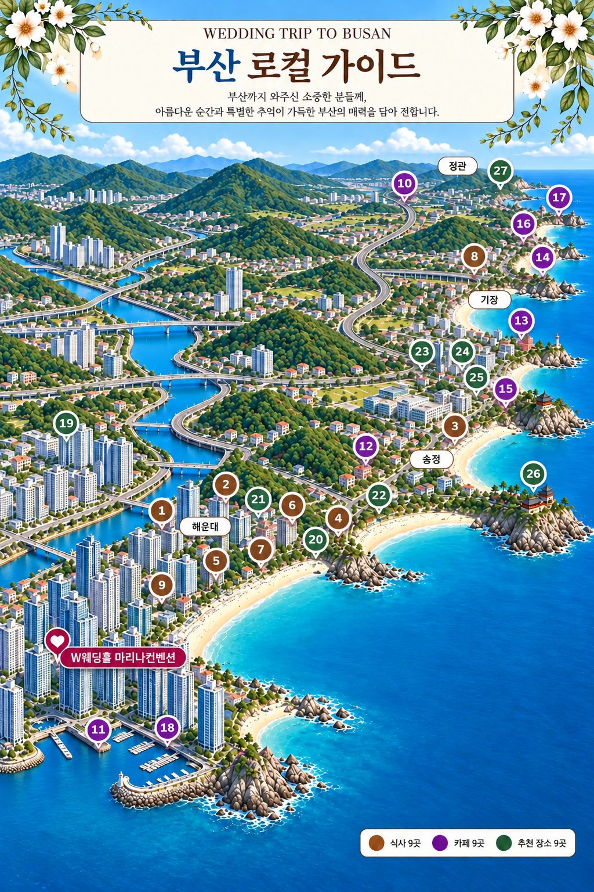
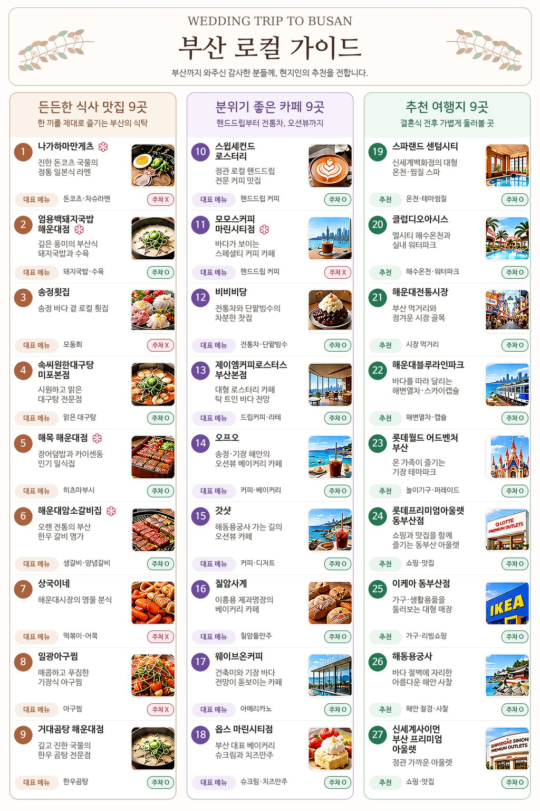

당일치기도보 · 택시
추천일정 1
마린시티 빵집에서 시작해 해운대시장 먹거리 구경, 원조 암소갈비 저녁으로 마무리
총 약 3시간부산까지 와주시는 소중한 분들께
저희가 직접 다녀보고 고른
맛집 · 카페 · 가볼 만한 곳을 모았습니다.
예식 전후로 부산 바다 즐기다 가세요.


✿ 미쉐린 가이드 선정 · 웨이팅 주의 줄 서는 곳
캐치테이블 테이블링 앱으로 미리 원격 줄서기 가능
짧은 일정부터 긴 일정 순서예요. 동그라미 번호를 누르면 장소 설명으로 이동해요.
마린시티 빵집에서 시작해 해운대시장 먹거리 구경, 원조 암소갈비 저녁으로 마무리
총 약 3시간일광 기장식 아구찜으로 든든하게 먹고, 정관 핸드드립 커피 한잔 뒤 아울렛 쇼핑까지
총 약 3시간 30분해수온천 노천탕에서 해운대 야경을 즐기고, 다음 날 해변열차 타고 송정 바다까지
1일차 약 4시간 30분 · 2일차 약 2시간 30분오션뷰 카페, 아울렛 등대 노을, 송정 회 한 상. 다음 날 돼지국밥 · 이케아 · 장안 바다
1일차 약 4시간 30분 · 2일차 약 4시간센텀 온천에서 푹 쉬고 한우곰탕 저녁. 다음 날 장어덮밥 먹고 해동용궁사와 대변항 카페
1일차 약 5시간 30분 · 2일차 약 3시간 30분